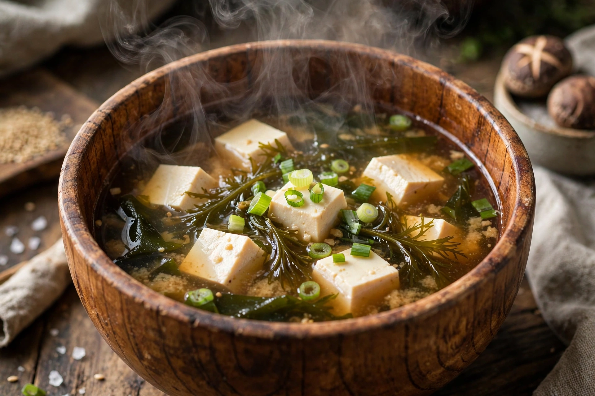

Miso soup (味噌汁, misoshiru) is a traditional Japanese soup consisting of a dashi stock into which softened miso paste is mixed, along with ingredients such as tofu, wakame seaweed and scallions. It is a staple of Japanese cuisine, eaten daily by most Japanese people, typically with rice at breakfast and as an accompaniment to meals.

| Course | Soup |
|---|---|
| Place of origin | Japan |
| Main ingredients | Dashi stock, miso paste, tofu, wakame |
| Served | Hot |
Dashi, usually made from kombu kelp and katsuobushi (bonito flakes) or dried sardines, forms the base. Miso paste — fermented soybeans, in white (sweet), red (robust) or mixed (awase) styles, sometimes made with rice or barley — is whisked in off the boil to preserve its aroma and enzymes. Common additions include silken tofu cubes, wakame, clams (shijimi or asari), mushrooms, root vegetables (tonjiru with pork) and seasonal produce, varying by region and household.
Miso soup anchors the traditional ichijū-sansai meal pattern of one soup and three dishes. Survey data suggest most Japanese eat it at least once a day; instant miso soup is ubiquitous in convenience stores and vending contexts. Studies associate regular miso consumption with aspects of the traditional Japanese diet pattern, though its sodium content is also noted.
Miso arrived from the Asian continent by the Nara period and soups made with it spread from temples and warrior households in medieval Japan to the general population in the Edo period, when miso soup with rice became the commoner's standard breakfast.